旬の古都華を、
まるごと一瓶に。
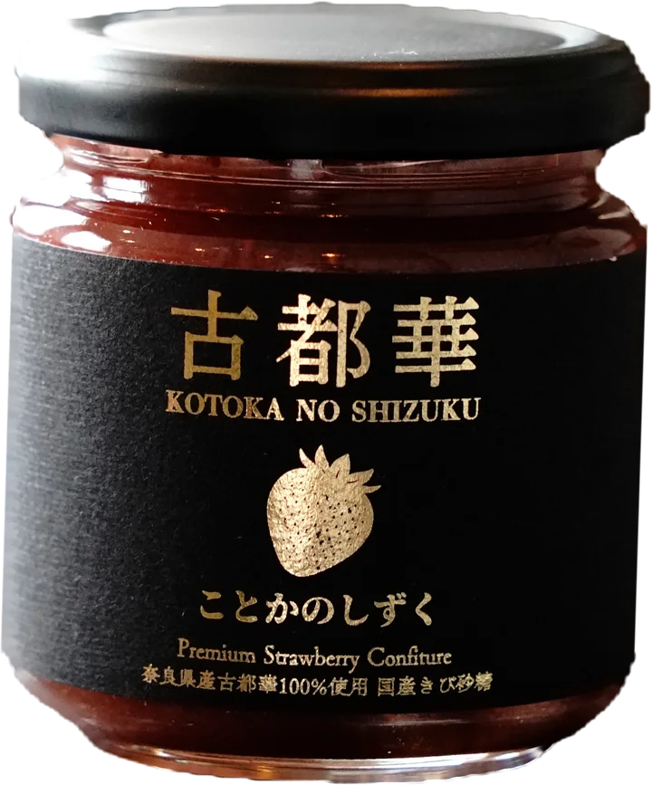
古都華のしずく
奈良県産古都華100%使用
奈良で生まれたいちご「古都華」のコンフィチュール。牛乳で割ると、いちごミルクになります。
購入方法を見る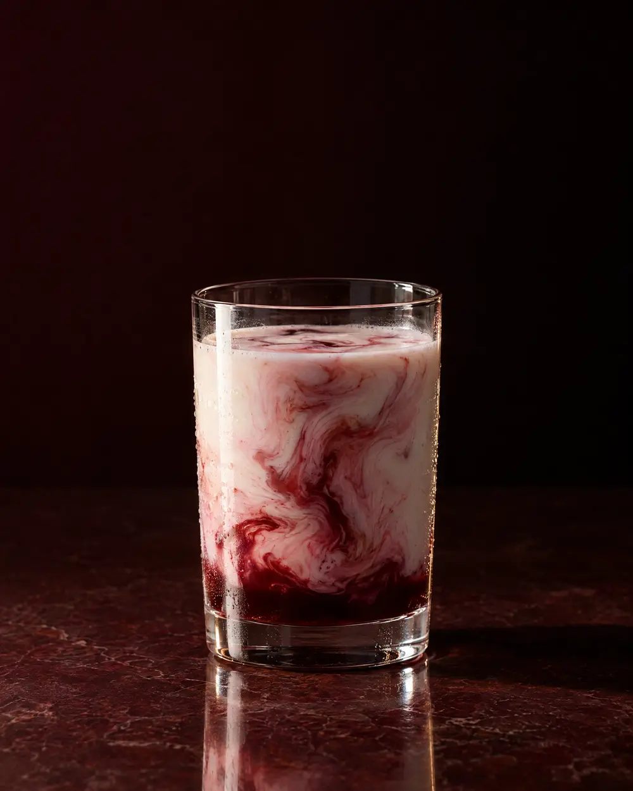
いちごミルク2,000杯超
ずっと真夜中でいいのに。特別公演祭「文禍伝雷」の2日間で販売（販売者調べ）
奈良市ふるさと納税の返礼品
寄附10,000円（180g×1）
古都華がとれるのは、
冬から春だけです。
古都華は、奈良県が育成し、2011年に品種登録されたいちごです。濃い赤色とつや、強い甘みとほどよい酸味、華やかな香りが特長です。
生の古都華の収穫期（12月中旬〜5月中旬）
- 生の古都華 12月中旬〜5月中旬
- 古都華のしずく 一年中
収穫時期は奈良市「古都華を味わう時間」による目安です。
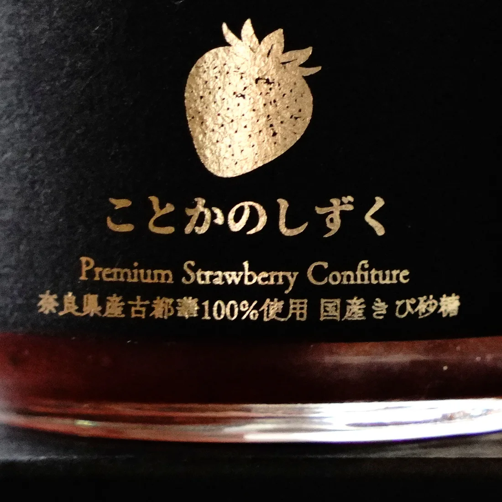
だから、一年中楽しめる
瓶に詰めました。
奈良県産の古都華を100%使ったコンフィチュールです。旬の時期でなくても、古都華の味を楽しめます。
原材料は4つだけ。
-
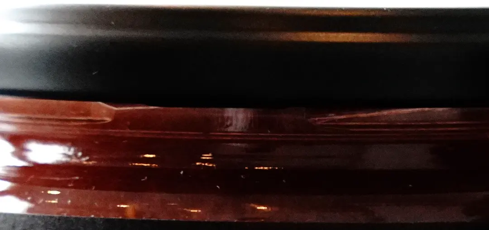
STRAWBERRY
いちご（古都華）
奈良県産を100%使用
-
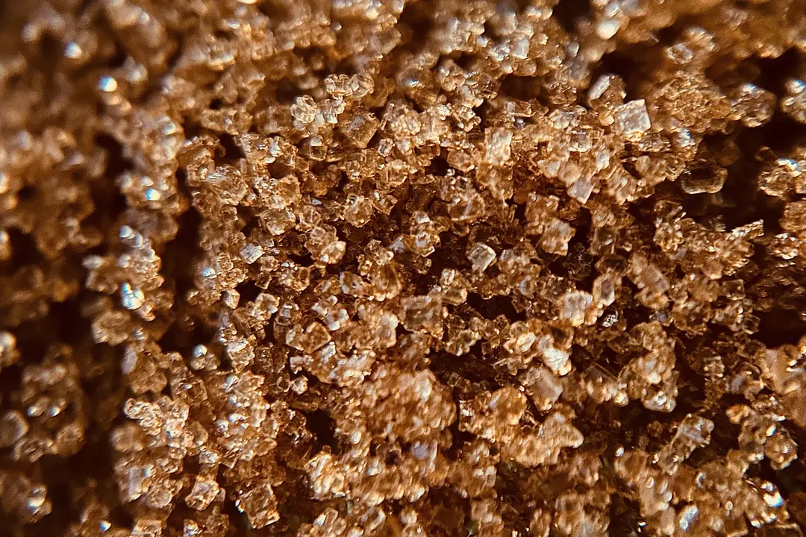
CANE SUGAR
きび砂糖
国産
-
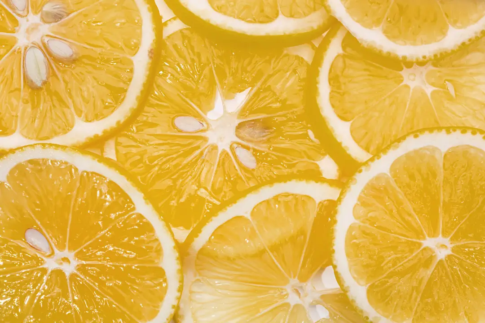
ORGANIC LEMON JUICE
有機レモン果汁
有機栽培のレモン
-
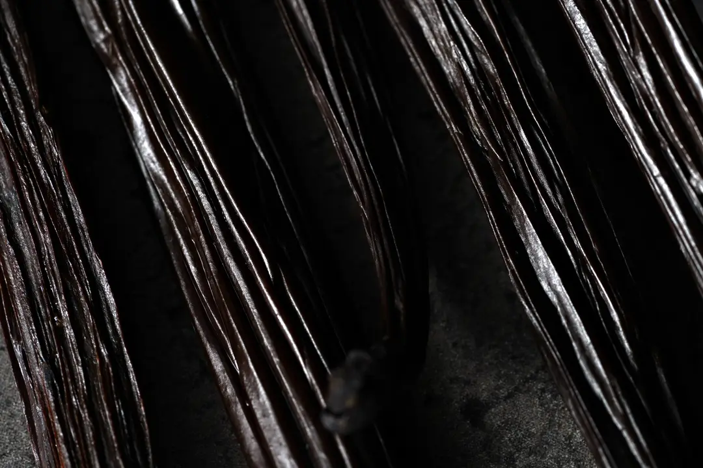
VANILLA ESSENCE
香料
バニラエッセンス
写真はイメージです
内容量 180g 常温で保存（開封後は冷蔵）
牛乳や炭酸水、お酒と割って楽しめるよう、清涼飲料水の規格でつくっています。
牛乳で割ると、
いちごミルクに。
目安は、古都華のしずく1に対して牛乳4〜5。ヨーグルトや豆乳、炭酸水とも合わせられます。
- 1 : 4しっかり
- 1 : 5すっきり
色はイメージです。
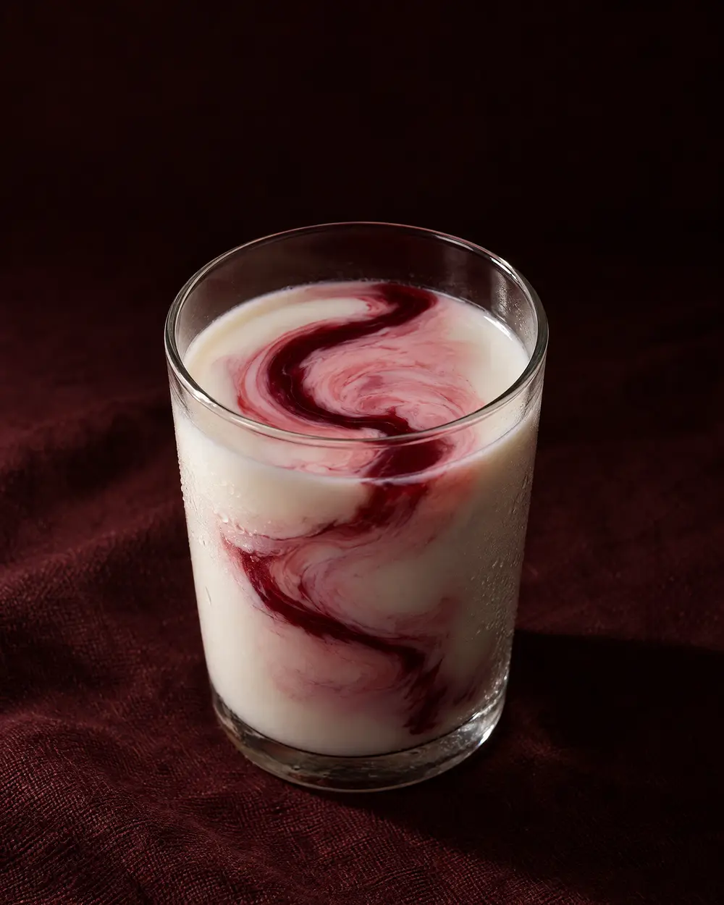
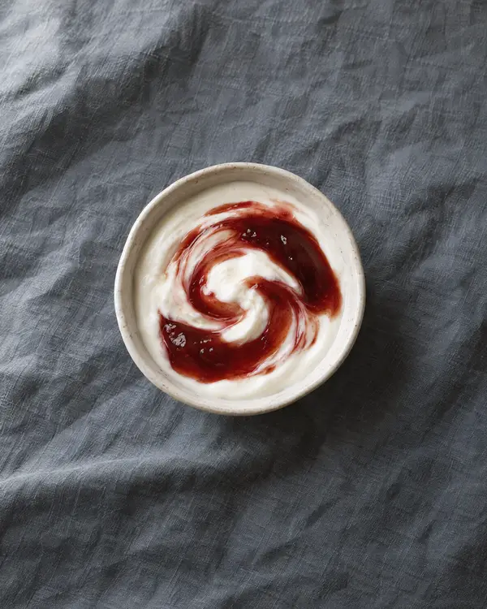
ヨーグルトに 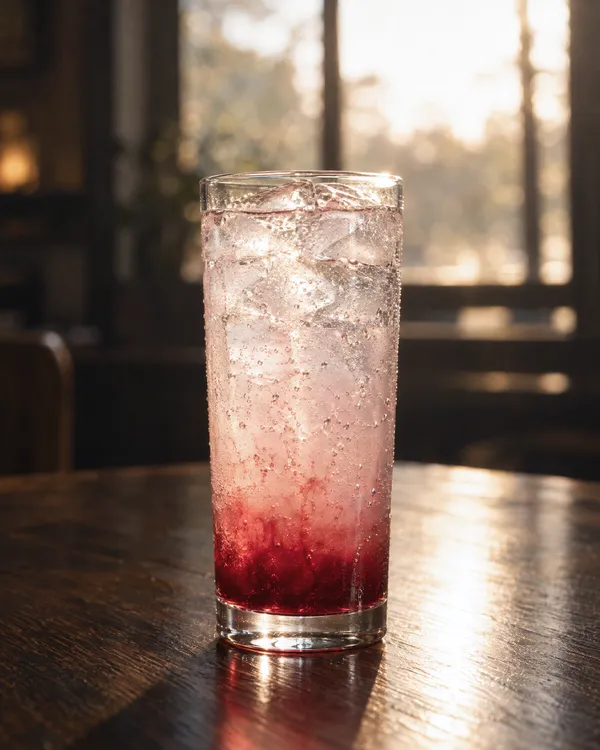
炭酸水で割って 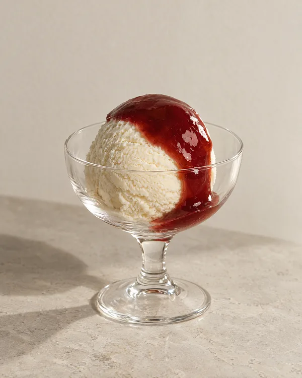
アイスクリームに 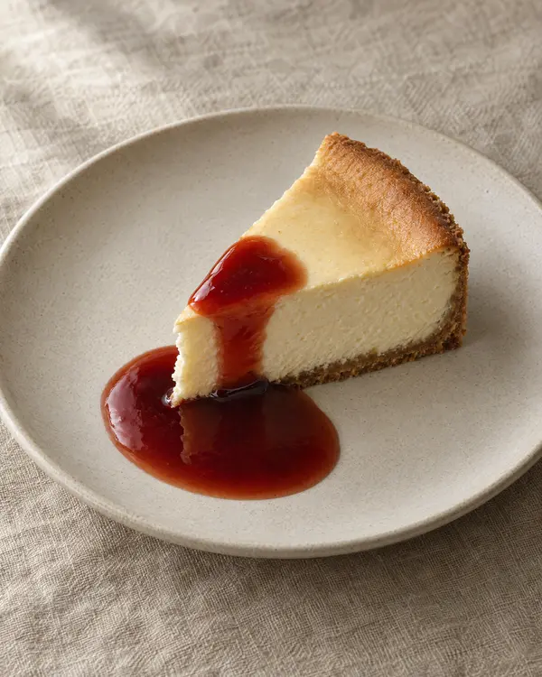
デザートのソースに
写真はイメージです
レシピを見るいちごミルクの販売数（2日間）
2,000杯超
2026年10月10日・11日、平城宮跡歴史公園で開かれた、ずっと真夜中でいいのに。の特別公演祭「文禍伝雷」。祭エリアで、古都華のしずくと奈良の牛乳を合わせたいちごミルクを販売しました。
- 公式コラボ瓶の販売数
- 1,000本超
販売数は販売者調べです。
奈良市ふるさと納税の返礼品
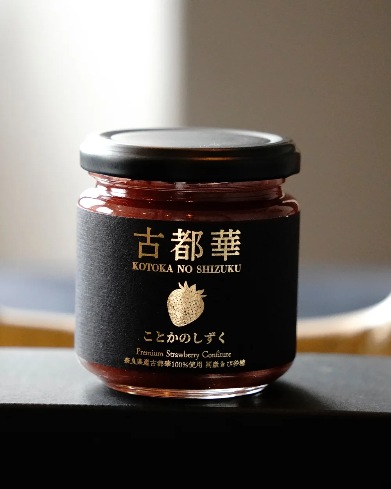
古都華のしずくは、奈良市のふるさと納税の返礼品です。
- 寄附金額
- 10,000円
- 内容
- 180g×1個（簡易包装、レシピカード付き）
- 配送
- 常温
- 受付
- 通年
寄附金額と内容は、2026年10月30日時点の掲載ページによります。
贈りものには箱入りを。
箱は黒地に金の箔押しです。奈良の手土産や季節のごあいさつ、企業のギフトにお使いいただけます。
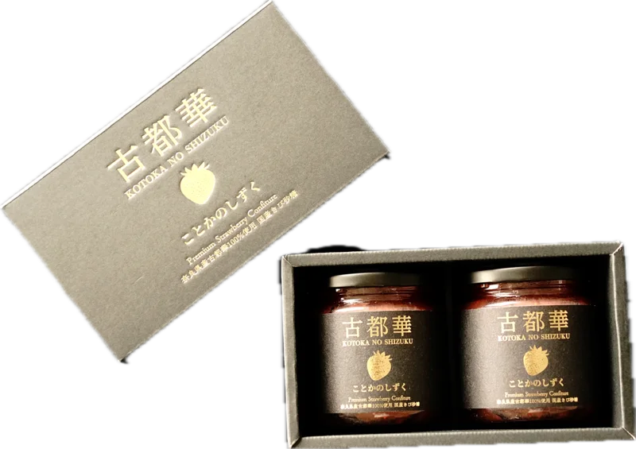
2本箱入り（紙袋付き） 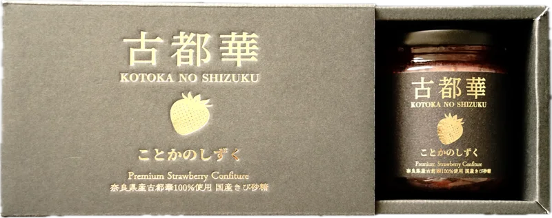
1本箱入り
製品情報
- 名称
- コンフィチュール（清涼飲料水）
- 原材料名
- いちご（古都華）、きび砂糖、有機レモン果汁／香料
- 内容量
- 180g
- 賞味期限
- 瓶の下部に記載（開封前）
- 保存方法
- 直射日光・高温多湿を避けて保存（開封後は要冷蔵）
- 栄養成分表示（100gあたり）
- エネルギー177kcal、たんぱく質0.6g、脂質0.6g、炭水化物42.3g、食塩相当量0.0g
- 製造者・販売者
- SAT株式会社 奈良営業所
奈良県奈良市佐保台西町143-1
原料由来の沈殿物や、時間の経過による色の変化が生じる場合がありますが、品質には問題ありません。
よくある質問
どのくらいの割合で割ればいいですか？
古都華のしずく1に対して、牛乳やヨーグルト4〜5が目安です。お好みで調整してください。
保存方法を教えてください。
開封前は、直射日光・高温多湿を避けて常温で保存してください。開封後は冷蔵庫で保存してください。
「清涼飲料水」と書かれているのはなぜですか？
牛乳や豆乳、炭酸水、お酒などと混ぜて楽しめるよう、清涼飲料水の規格で製造しています。
賞味期限はどこで確認できますか？
瓶の下部に記載しています。開封前の期限です。
ふるさと納税で申し込めますか？
はい。奈良市のふるさと納税の返礼品として、au PAY ふるさと納税に掲載されています。
購入方法
取扱店とオンラインストアの情報は準備中です。